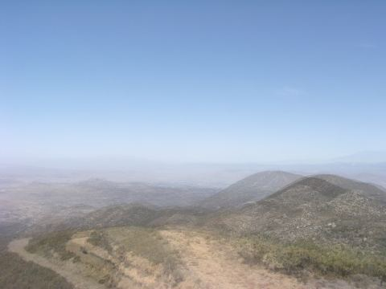
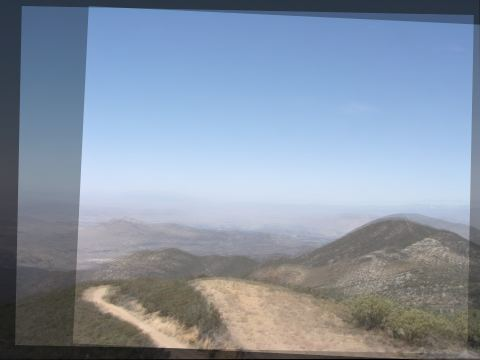

Step 1 of 5 Align
Twenty years of footage, one fixed view
Cameras drift a few pixels a month, get knocked by wind and crews, and get re-aimed or moved. Fuel Gauge locks every usable frame back onto one view, so a pixel means the same patch of hillside in 2004 and 2018.


Before: averaged as recordedAfter Fuel GaugeUnder the hood
- Frame screeningBrightness, Laplacian sharpness, contrast and clipping checks drop night, glare and blur before matching.
- SIFT on CLAHE greyscaleContrast-limited histogram equalisation evens out season and time of day; matches pass Lowe's ratio test at 0.75.
- 4-DOF similarity by RANSACShift, rotation and scale only. A full homography overfits to clouds and moving shadows.
- Keyframe trackingFrames match recent keyframes, relocalise against older ones, and start a new stretch after four lost frames.
- Loop closureStretches join through a maximum-inlier spanning tree over their clearest keyframes.
- Relocations and bumpsA camera moved to a new mast becomes a second view; sustained shifts are logged as move dates.
fuelgauge register-archive photos/ out/ridge